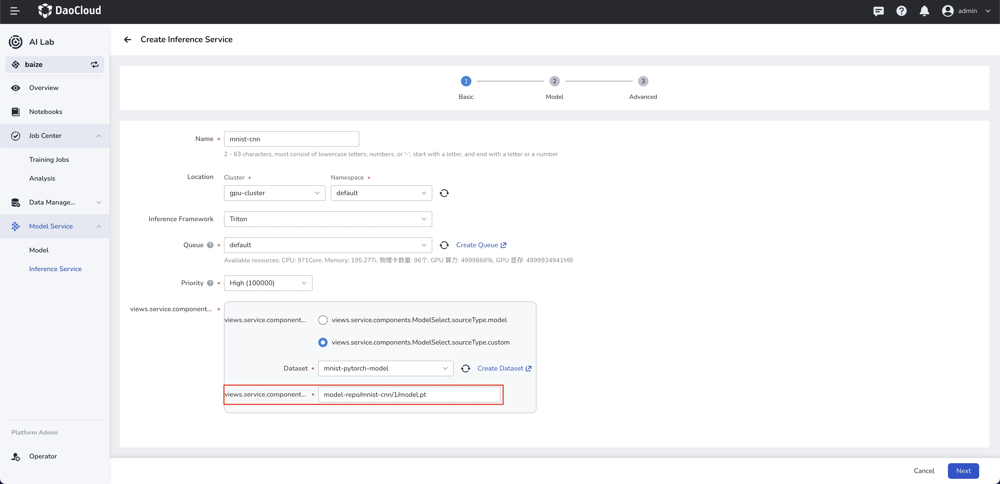
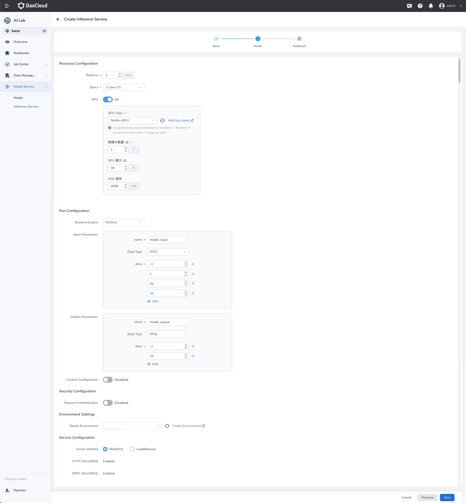
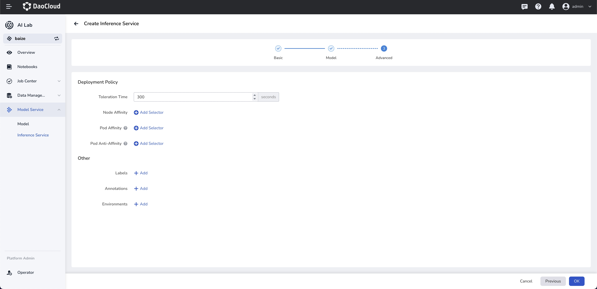
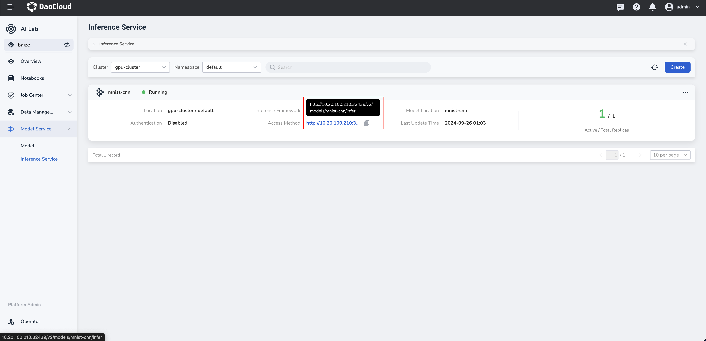

Create Inference Service Using Triton Framework¶
The AI Lab currently offers Triton and vLLM as inference frameworks. Users can quickly start a high-performance inference service with simple configurations.
Danger
The use of Triton's Backend vLLM method has been deprecated. It is recommended to use the latest support for vLLM to deploy your large language models.
Introduction to Triton¶
Triton is an open-source inference server developed by NVIDIA, designed to simplify the deployment and inference of machine learning models. It supports a variety of deep learning frameworks, including TensorFlow and PyTorch, enabling users to easily manage and deploy different types of models.
Prerequisites¶
Prepare model data: Manage the model code in dataset management and ensure that the data is successfully preloaded. The following example illustrates the PyTorch model for mnist handwritten digit recognition.
Note
The model to be inferred must adhere to the following directory structure within the dataset:
The directory structure in this example is as follows:
Create Inference Service¶
Currently, form-based creation is supported, allowing you to create services with field prompts in the interface.

Configure Model Path¶
The model path model-repo/mnist-cnn/1/model.pt must be consistent with the directory structure of the dataset.
Model Configuration¶

Configure Input and Output Parameters¶
Note
The first dimension of the input and output parameters defaults to batchsize, setting it to -1 allows for the automatic calculation of the batchsize based on the input inference data. The remaining dimensions and data type must match the model's input.
Configure Environment¶
You can import the environment created in Manage Python Environment Dependencies to serve as the runtime environment for inference.
Advanced Settings¶

Configure Authentication Policy¶
Supports API key-based request authentication. Users can customize and add authentication parameters.
Affinity Scheduling¶
Supports automated affinity scheduling based on GPU resources and other node configurations. It also allows users to customize scheduling policies.
Access¶

API Access¶
- Triton provides a REST-based API, allowing clients to perform model inference via HTTP POST requests.
- Clients can send requests with JSON-formatted bodies containing input data and related metadata.
HTTP Access¶
-
Send HTTP POST Request: Use tools like
curlor HTTP client libraries (e.g., Python'srequestslibrary) to send POST requests to the Triton Server. -
Set HTTP Headers: Configuration generated automatically based on user settings, include metadata about the model inputs and outputs in the HTTP headers.
-
Construct Request Body: The request body usually contains the input data for inference and model-specific metadata.
Example curl Command¶
curl -X POST "http://<ip>:<port>/v2/models/<inference-name>/infer" \
-H "Content-Type: application/json" \
-d '{
"inputs": [
{
"name": "model_input",
"shape": [1, 1, 32, 32],
"datatype": "FP32",
"data": [
[0.1234, 0.5678, 0.9101, ... ]
]
}
]
}'
<ip>is the host address where the Triton Inference Server is running.<port>is the port where the Triton Inference Server is running.<inference-name>is the name of the inference service that has been created."name"must match thenameof the input parameter in the model configuration."shape"must match thedimsof the input parameter in the model configuration."datatype"must match theData Typeof the input parameter in the model configuration."data"should be replaced with the actual inference data.
Please note that the above example code needs to be adjusted according to your specific model and environment. The format and content of the input data must also comply with the model's requirements.